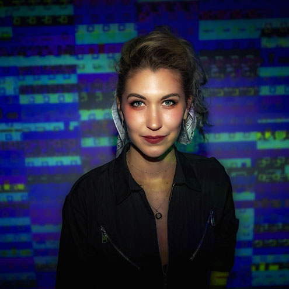

Need description

Ashley Zelinskie is Brooklyn-based conceptual artist utilizing a post-New Media approach, wherein the
media employed are merely vehicles in service of underlying concepts, she is attempting the process of
translating our vast history into an eternal and universal language, while focusing on humanity as a
small part of a larger whole. Her works span a variety of media, from sculpture, canvas and print works,
to digital art, VR, and holograms. Each artwork is created using cutting edge technology such as 3D
printing, computer-guided laser cutting, satellite plating technology, and gaming engines. Her work
focuses on visualizing data in abstract forms and finding new and interesting ways to describe complex
ideas.
Ashley's work has been featured by The New York Times, The New Yorker, Vice, Popular Science, Space.com,
and Hyperallergic. Her work forms part of the permanent collection of the US Department of State Art in
Embassies Program, The Whitney Museum's artport collection, and has been exhibited at Sotheby's New
York, ArtScience Museum in Singapore and most recently Art Center Nabi in Seoul. Ashley is a former
resident of New Inc.—the New Museum's Art and Technology Incubator—and the Shapeways x Museum of Art
and design “Out of Hand” exhibition residency. She is currently working in coordination with NASA, the
European Space Agency, and the Smithsonian and she is a member of Onassis ONX XR studio in New York
City.